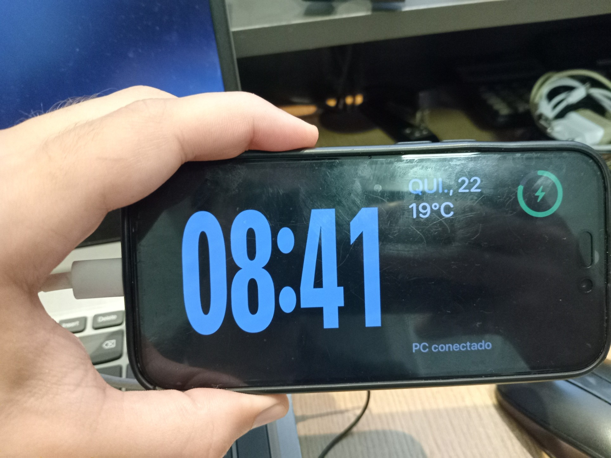
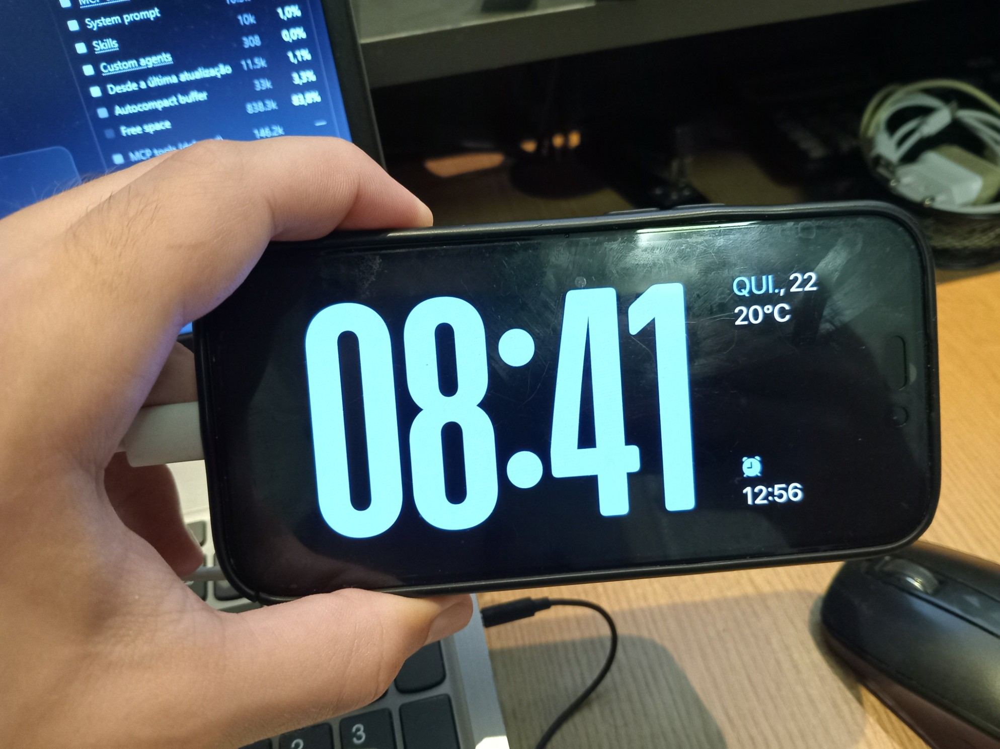

etapa-5b-monitor-virtual · arquivo melhorias/melhorias-planejadas.pdfmelhorias/melhorias-planejadas.html”.
Nada destas três melhorias foi executado ainda: o próximo passo é escolher a ordem
(seção 1) e responder as perguntas em aberto da melhoria escolhida.
| # | Melhoria | Estimativa | Mexe em |
|---|---|---|---|
| A | Relógio igual ao StandBy original do iPhone | 3–5 h (1 sessão) | só o app do iPhone |
| — | Terminar a Etapa 5d (atraso e engasgos) — já em andamento | ≈ 1 dia | app do PC |
| B | Kit de instalação para levar o TelaDois a outro PC | ≈ meio dia (1 sessão) | scripts + publicação do app do PC |
| C | Versão Android com as mesmas funções | 7–10 dias de trabalho | app Android novo + app do PC |
Ordem recomendada: Relógio → terminar a 5d → Kit → Android.
Os tempos incluem meu trabalho + esperas reais: build do iPhone na nuvem (~15 min por rodada), instalar no celular e você testar.
tools\vdd\instalar-vdd.ps1 como administrador e testar lá.main: só com ios-test, ios-build e windows-test verdes e com a sua aprovação.

| TelaDois hoje | StandBy original | |
|---|---|---|
| Cor dos dígitos | azul #7FA9F2 | azul-claro / ciano, mais luminoso |
| Formato dos dígitos | condensados, cantos retos, esticados 1,5× | cantos arredondados, traço mais grosso |
| Tamanho | menor | ocupa quase toda a altura da tela |
| Data e temperatura | azuis | brancas |
| Canto superior direito | anel verde da bateria | vazio |
| Canto inferior direito | “PC conectado” | ⏰ próximo alarme (12:56) |
Theme.swift / ClockPageView.swift e atualizar docs/design/tokens.md.Não existe um arquivo do driver guardado no PC. O instalador tools\vdd\instalar-vdd.ps1 baixa, a cada instalação, o pacote oficial
VirtualDisplayDriver-x86.Driver.Only.zip (versão 25.7.23, 132 KB, assinado pela SignPath Foundation) do GitHub e confere o SHA-256.
Depois de instalado, o driver fica guardado no próprio Windows. As configurações ficam em C:\VirtualDisplayDriver\vdd_settings.xml.
| Peça | Como é hoje |
|---|---|
Driver do monitor virtual + tarefas \TelaDois\ | script do repositório, como administrador, precisa de internet |
TelaDois.exe | precisa do .NET 10 instalado |
| FFmpeg | winget install Gyan.FFmpeg, à parte |
| Driver USB da Apple (Apple Mobile Device Support) | iTunes/iCloud versão web, à parte |
| Atalho na Área de Trabalho | à mão |
Instalar TelaDois.cmd: pede administrador uma vez e faz tudo.%LOCALAPPDATA%\Programs\TelaDois.winget o que faltar.Desinstalar TelaDois.cmd que desfaz tudo.Alternativa: instalador .exe com assistente (Inno Setup). Mais bonito, mas +1 dia e o Windows mostra “editor desconhecido” (sem assinatura).
graphify.exe). O kit precisa ser testado nos dois PCs..cmd (recomendado) ou instalador .exe?winget?Projeto irmão em C:\Pedro\Arquivos Pedro\Aplicativo Android (repositório Pedro3720/teladois-android), pausado na Etapa 0:
app “Olá” em Kotlin + Jetpack Compose, CI verde no GitHub, especificação própria e guia de instalação por adb.
A Task 7 (instalar no celular) ficou esperando um Android com Depuração USB ligada.
| Reaproveita | É novo |
|---|---|
| Quase todo o app do PC: captura, compressão, monitor virtual, atalhos, tela preta, medidores | App do celular inteiro em Kotlin |
| Protocolo PC ↔ celular (mesmas mensagens e bytes) | Cabo pelo ADB em vez do serviço da Apple (exige “Depuração USB” ligada uma vez) |
| Design (cores, layout, comportamento do Descanso) | Decodificar o vídeo H.264 no Android (MediaCodec) |
| Etapa | Estimativa |
|---|---|
| Fechar a Etapa 0 + instalar no seu Android | 2–3 h |
| Modo Descanso (relógio, clima, bateria, tela preta após 60 s) | 1–2 dias |
| Túnel pelo cabo (ADB) no app do PC — que passa a atender iPhone e Android | 1–2 dias |
| Vídeo (H.264 no Android) + monitor estendido + tela preta | 2–3 dias |
| Ajuste de atraso no aparelho + revisão + docs | 1–2 dias |
Recomendação: um único app no PC que reconhece os dois celulares (a especificação do Android previa um app de PC separado, o que duplicaria o trabalho das Etapas 5a–5d). Diferente do iPhone, o Android compila e instala direto deste PC (sem nuvem e sem renovar a cada 7 dias).
Lição: depois de rodar o instalador do driver, reabrir o TelaDois pelo atalho da Área de Trabalho. Com o “iniciar com o Windows” (kit ou Etapa 6) isso deixa de ser preciso.